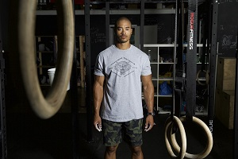

More About Weigh Protein
Weigh Protein was founded in 1993 by Bradley Martin. Bradley was tired of chuging down horribllly tasting protein shakes that he drank with his nasty cup that was washed in his dish washer but kept forgeting to dry it off before he used it so he got the soapy taste in his mouth. So one day he thought he would just make his own horrible flavor. First Bradley started brainstorming flavors, he thought of chocolate, venilla, and all the other basic flavors. But it wasn't enough to stand out from the crowd. He accidentally split his derritos into his protein shake and realized that would be a great flavor. So the first two flavors where derritos and soap water.
